Estruturas de Controle
As estruturas que veremos a seguir são comuns para as linguagens de programação imperativas, bastando, portanto, descrever a sintaxe de cada uma delas, resumindo o funcionamento.
BlocosUm bloco consiste de vários comandos agrupados com o objetivo de relacioná-los com determinado comando ou função. Em comandos como if, for, while, switch e em declarações de funções blocos podem ser utilizados para permitir que um comando faça parte do contexto desejado. Blocos em PHP são delimitados pelos caracteres “{” e “}”. A utilização dos delimitadores de bloco em uma parte qualquer do código não relacionada com os comandos citados ou funções não produzirá efeito algum, e será tratada normalmente pelo interpretador.
Exemplo:
if ($x == $y)
comando1;
comando2;
Para que comando2 esteja relacionado ao if é preciso utilizar um bloco:
if ($x == $y){
comando1;
comando2;
}
Comandos de seleçãoTambém chamados de condicionais, os comandos de seleção permitem executar comandos ou blocos de comandos com base em testes feitos durante a execução.
ifO mais trivial dos comandos condicionais é o if. Ele testa a condição e executa o comando indicado se o resultado for true (valor diferente de zero). Ele possui duas sintaxes:
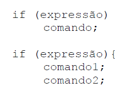 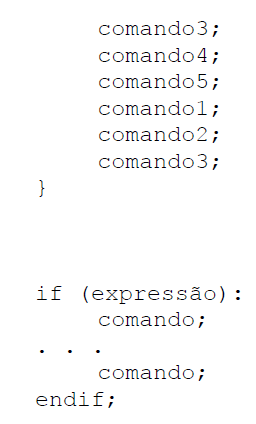Para incluir mais de um comando no if da primeira sintaxe, é preciso utilizar um bloco, demarcado por chaves.
O else é um complemento opcional para o if. Se utilizado, o comando será executado se a expressão retornar o valor false (zero). Suas duas sintaxes são:
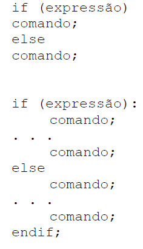A seguir, temos um exemplo do comando if utilizado com else:
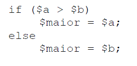O exemplo acima coloca em $maior o maior valor entre $a e $b
Em determinadas situações é necessário fazer mais de um teste, e executar condicionalmente diversos comandos ou blocos de comandos. Para facilitar o entendimento de uma estrutura do tipo:
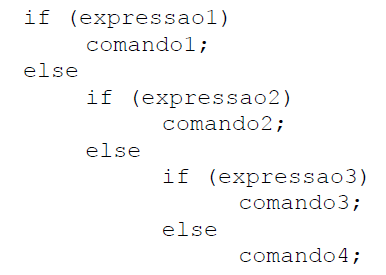foi criado o comando, também opcional elseif. Ele tem a mesma função de um else e um if usados seqüencialmente, como no exemplo acima. Num mesmo if podem ser utilizados diversos elseif’s, ficando essa utilização a critério do programador, que deve zelar pela legibilidade de seu script.
O comando elseif também pode ser utilizado com dois tipos de sintaxe. Em resumo, a sintaxe geral do comando if fica das seguintes maneiras:
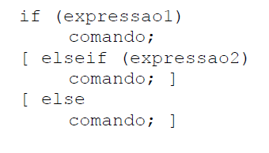 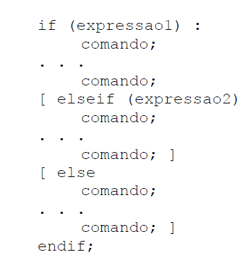 switchO comando switch atua de maneira semelhante a uma série de comandos if na mesma expressão. Freqüentemente o programador pode querer comparar uma variável com diversos valores, e executar um código diferente a depender de qual valor é igual ao da variável. Quando isso for necessário, deve-se usar o comando switch. O exemplo seguinte mostra dois trechos de código que fazem a mesma coisa, sendo que o primeiro utiliza uma série de if’s e o segundo utiliza switch:
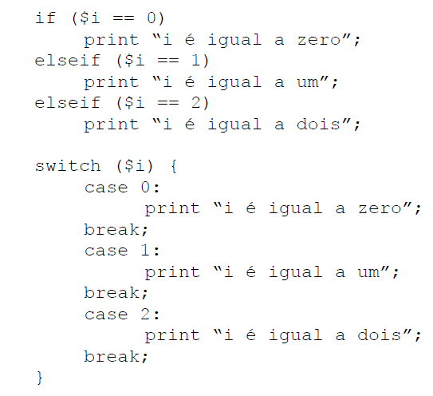É importante compreender o funcionamento do switch para não cometer enganos. O comando switch testa linha a linha os cases encontrados, e a partir do momento que encontra um valor igual ao da variável testada, passa a executar todos os comandos seguintes, mesmo os que fazem parte de outro teste, até o fim do bloco. por isso usa-se o comando break, quebrando o fluxo e fazendo com que o código seja executado da maneira desejada. Veremos mais sobre o break mais adiante. Veja o exemplo:
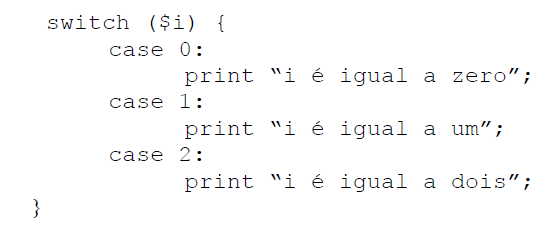No exemplo acima, se $i for igual a zero, os três comandos “print” serão executados. Se $i for igual a 1, os dois últimos “print” serão executados. O comando só funcionará da maneira desejada se $i for igual a 2.
Em outras linguagens que implementam o comando switch, ou similar, os valores a serem testados só podem ser do tipo inteiro. Em PHP é permitido usar valores do tipo string como elementos de teste do comando switch. O exemplo abaixo funciona perfeitamente:
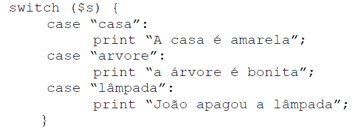 comandos de repetição whileO while é o comando de repetição (laço) mais simples. Ele testa uma condição e executa um comando, ou um bloco de comandos, até que a condição testada seja falsa. Assim como o if, o while também possui duas sintaxes alternativas:
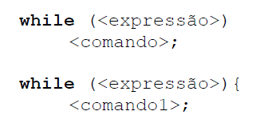 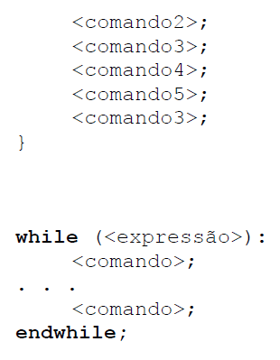A expressão só é testada a cada vez que o bloco de instruções termina, além do teste inicial. Se o valor da expressão passar a ser false no meio do bloco de instruções, a execução segue até o final do bloco. Se no teste inicial a condição for avaliada como false, o bloco de comandos não será executado.
O exemplo a seguir mostra o uso do while para imprimir os números de 1 a 10:
$i = 1;
while ($i <=10)
print $i++;
do... whileO laço do...while funciona de maneira bastante semelhante ao while, com a simples diferença que a expressão é testada ao final do bloco de comandos. O laço do...while possui apenas uma sintaxe, que é a seguinte:
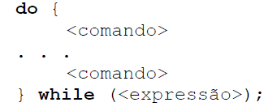O exemplo utilizado para ilustrar o uso do while pode ser feito da seguinte maneira utilizando o do... while:
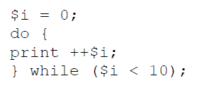 forO tipo de laço mais complexo é o for. Para os que programam em C, C++ ou Java, a assimilação do funcionamento do for é natural. Mas para aqueles que estão acostumados a linguagens como Pascal, há uma grande mudança para o uso do for. As três sintaxes permitidas são:
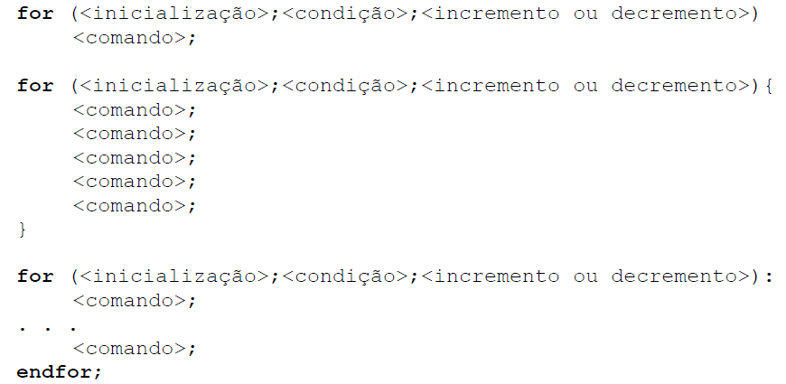As três expressões que ficam entre parênteses têm as seguintes finalidades:
Inicialização: comando ou seqüência de comandos a serem realizados antes do inicio do laço. Serve para inicializar variáveis.
Condição: Expressão booleana que define se os comandos que estão dentro do laço serão executados ou não. Enquanto a expressão for verdadeira (valor diferente de zero) os comandos serão executados.
Incremento: Comando executado ao final de cada execução do laço.
Um comando for funciona de maneira semelhante a um while escrito da seguinte forma:
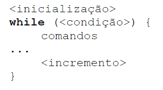Quebra de fluxo
BreakO comando break pode ser utilizado em laços de do, for e while, além do uso já visto no comando switch. Ao encontrar um break dentro de um desses laços, o interpretador PHP para imediatamente a execução do laço, seguindo normalmente o fluxo do script.
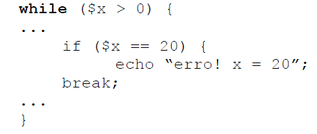No trecho de código acima, o laço while tem uma condição para seu término normal ($x <= 0), mas foi utilizado o break para o caso de um término não previsto no início do laço. Assim o interpretador seguirá para o comando seguinte ao laço.
ContinueO comando continue também deve ser utilizado no interior de laços, e funciona de maneira semelhante ao break, com a diferença que o fluxo ao invés de sair do laço volta para o início dele. Vejamos o exemplo:
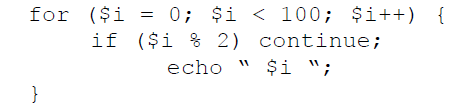O exemplo acima é uma maneira ineficiente de imprimir os números pares entre 0 e 99. O que o laço faz é testar se o resto da divisão entre o número e 2 é 0. Se for diferente de zero (valor lógico true) o interpretador encontrará um continue, que faz com que os comandos seguintes do interior do laço sejam ignorados, seguindo para a próxima iteração.